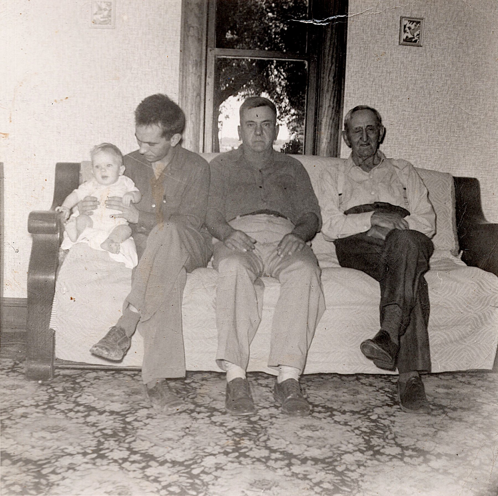

If you grew up in Cambria, you grew up inside this story without knowing it. The porch where you waited for the school bus was your great-great-grandfather’s general store. The brick garage by the tracks was the office of the grain elevator your great-great-great-grandfather built. “Sharp’s Curve,” the bend in the road west of town that Dad always wondered about, is named for the same man — he was the road superintendent, and he surveyed it wrong. And the patch of woods and junk-strewn grass a few miles southwest, where the sawmill used to be, is the last piece of a farm that a man named John Sloan bought from the United States government while Andrew Jackson was president.
This site gathers what Ben dug out of courthouses, libraries, cemeteries, newspaper archives and the memories of cousins between 2017 and 2019: the photographs, the maps, the letters, the probate papers, the family tree. It is written for the children of Harold “Kip” Sloan Jr. and Deanna Torrence Sloan, and for anybody else who remembers the farm.
Eight generationsThe line, from Antrim to Cambria
- John Sloand. 1829, Laurens District, South Carolina
“A native of Ireland, a soldier of ’76.” His gravestone says he lived 113 years. He almost certainly didn’t — but he did cross the Atlantic from County Antrim, and he did fight the British. His story →
- John Sloan & Margaret Sloan1793–1854 · 1797–1854
Cousins, by family tradition, who married in Newberry, South Carolina and came north to the Indiana woods around 1830. He was an elder of the first church in the neighborhood. They died three months apart. The farm near Hamilton →
- John R. Sloan & Elizabeth Ellen Pickering1837–1907 · 1842–1922
The only son married the English neighbors’ only daughter. They buried four of their six children and kept the farm going.
- Ulysses “Uly” Sloan & Minnie Ruth Simmons1876–1967 · 1881–1958
Sawmill man, steam-engine man, keeper of the Christmas Book. She was Brethren, from the big Neher and Cripe clans. Uly’s sawmill →
- Ellis L. Sloan & Bessie Bell Gum1902–1972 · 1905–1954
He ran the farm and mill. She was the Cambria storekeeper’s daughter, an Indiana University mathematics graduate, class of 1928. Cambria: Sharps & Gums →
- Harold E. Sloan & Theresa Ann Riley1933–1995 · 1937–2000
Grandpa Harry, a Marine in Korea, brought home a bride from the Irish mill neighborhoods of Lowell, Massachusetts. Grandma Terry’s Lowell →
- Harold “Kip” Sloan Jr. & Deanna Torrencemarried 1978
Married at Hope Methodist in Frankfort, lived first at the farm, and moved “to Cambria in Oct. — old Michael place” in 1981, as the Christmas Book records. Mom’s people were Carolina mountaineers and Carroll County railroaders. Mom’s side →
- You
Kip and Deanna’s children.

Start anywhereThe chapters
A Soldier of ’76
Four brothers from Antrim, a musket ball carried for life, a bride of thirteen, and a gravestone that claims 113 years.
The Farm near Hamilton
Two forty-acre land patents, a Presbyterian church in the woods, an estate sale in 1854, and the Pickerings next door.
Uly’s Sawmill
Steam engines, fox hunts, Sanky Bennett’s cabin in the woods, and sixty years of Christmas mornings.
Cambria
The Monon, the elevator, Gum’s store, Sharp’s Curve — and maps of the town growing lot by lot.
Torrence · Grantham · Sheets
Grandma Delores in her own words, a preacher thirty years older than his bride, and the Blue Ridge.
Lowell, Massachusetts
Rileys, Hodges and Condons: Irish woolsorters and carpet weavers in the mill city.
The Christmas Book
Every December 25th for sixty-one years, somebody wrote down the weather. Read the whole thing.
The Family Tree
Click through your ancestors on every line, back to the 1700s.
Photographs
Every photograph on the site in one place.
A word of cautionWhat’s proven and what’s a good story
Family history is a mix of courthouse paper and things somebody’s aunt said. This site tries to keep them apart. Where you see a green-edged box marked On the record, there’s a document behind it. A gold-edged box marked Family legend means it’s a story that was already old when it was written down, and may have grown in the telling. The Sources page lists where everything came from, and the loose ends nobody has tied up yet.